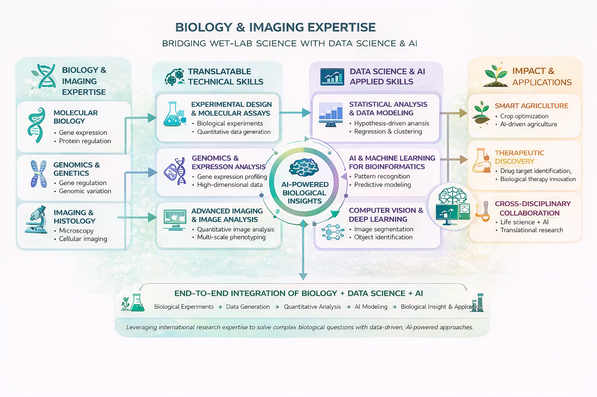
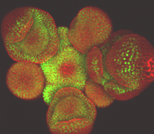
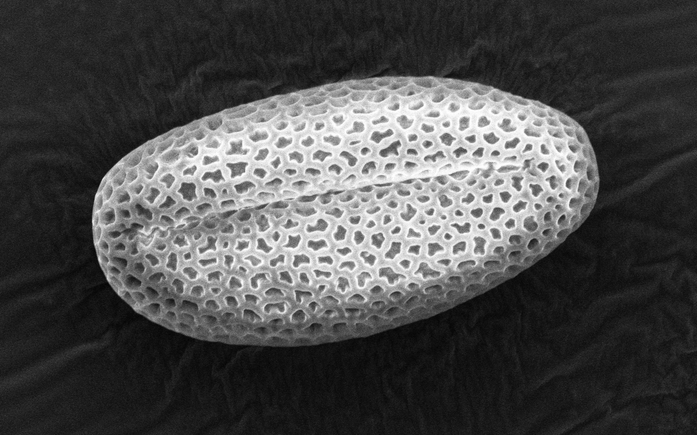
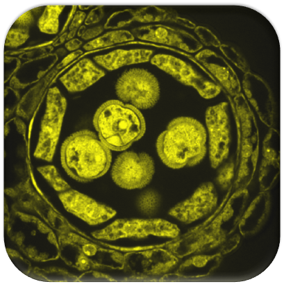
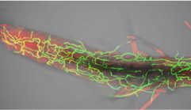

Applied AI & Computer Vision Engineer with a PhD in Plant Biology. I combine deep scientific expertise with end-to-end AI system development to build real-world solutions for environmental monitoring, agriculture, and life sciences.
I started my career in fundamental plant science, completing a PhD followed by multiple postdoctoral positions
across leading European research institutes. My work focused on understanding complex biological systems —
from gene regulatory networks to tissue-level organization.
Today, I apply this deep scientific mindset to real-world challenges as an AI & Computer Vision Engineer in industry,
building scalable solutions for environmental monitoring, agriculture, and life sciences.
Extensive expertise in molecular biology, genetics, and biochemistry with a focus on plant reproduction, development, and tissue interactions. Proficient in high-resolution imaging techniques including confocal, scanning electron, and transmission electron microscopy, as well as histology.

How do plants grow and produce new organs?
We uncovered a hidden gene regulatory network controlling growth and organ development though the hormone auxin

How do plant tissues communicate during reproduction?
We discovered a new apoplastic barrier controlling cell-to-cell exchange in anthers

How do plant cells coordinate to build pollen?
We uncovered a peptide-based communication system between difefrent tissues and cells which regulates the pollen protective layer formation

How do plants fight pathogens?
We studied hormone balance and vascular responses which enable plant to survive attacks by fungal pahtogens

Developing AI to accelerate discoveries in molecular biology, plant breeding, and ecosystem monitoring
My understanding of molecular networks and plant biology guides AI to interpret complex biological datasets meaningfully
High-resolution microscopy feeds AI image analysis to detect cells, pollen, and disease symptoms automatically
Merge transcriptomics, phenotyping, and environmental datasets with AI pipelines to reveal hidden biological patterns